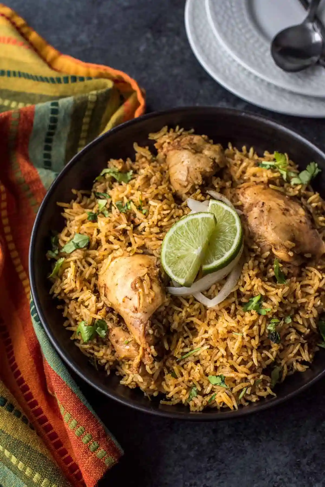
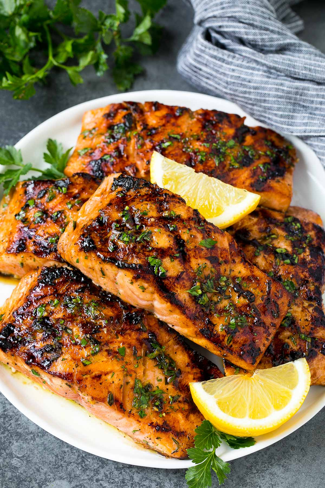

Dinner

Chicken Biryani
Biryani is a mixed rice dish originating among the Muslims of the Indian subcontinent. It is made with Indian spices, rice, and usually some type of meat ...

Grilled Salmon
Season salmon fillets with lemon pepper, garlic powder, and salt. ... Lightly oil grill grate. Place salmon on the preheated grill, and discard ...

Masala Dosa
Masala dosa are crisp rice and lentil crepes stuffed with spiced and savory potato filling. They are a popular breakfast snack from the South ...